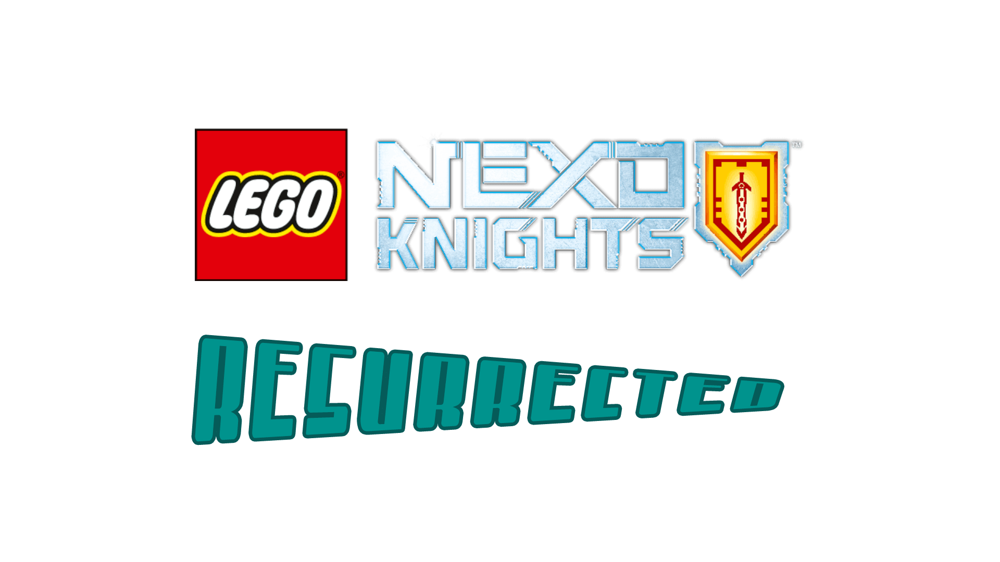
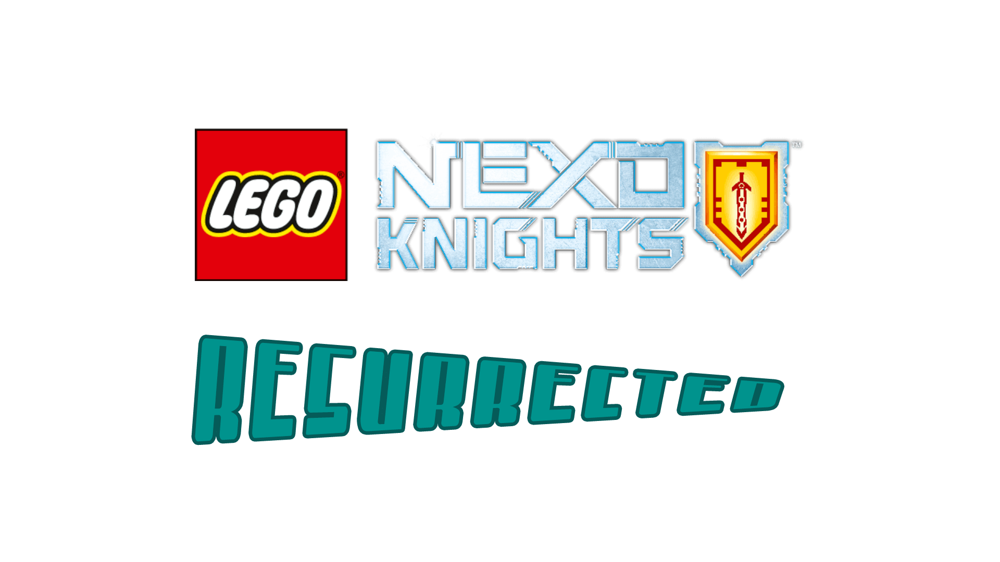

NEXO Knights: Resurrected
"NEXO Knights: Resurrected" is a "LEGO: NEXO Knights" fan-fiction written by Troy Carpenter. It takes place after the events of the TV series and includes the main ensemble of characters. It will be an untold number of seasons (books) long with six to twelve episodes (chapters) each season.
Chapters:
- Season 1: Sorcerer
News: (in order)
- Troy: I have posted chapter 1. (May 4th, 2020)